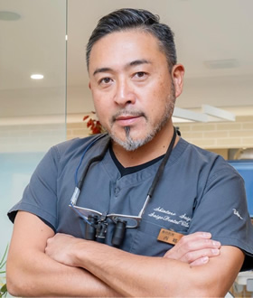
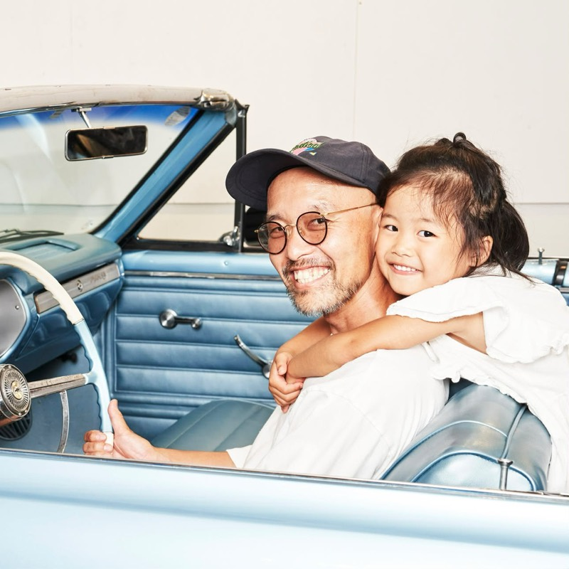
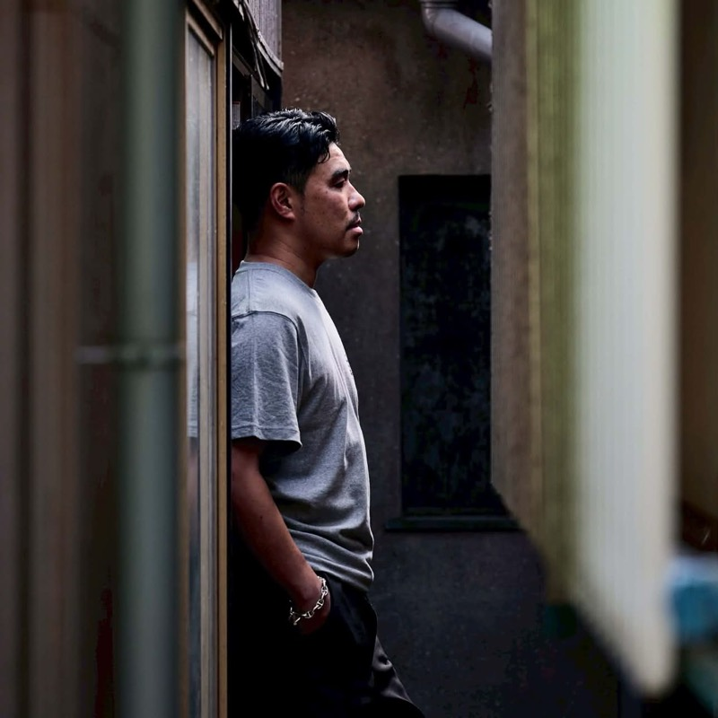
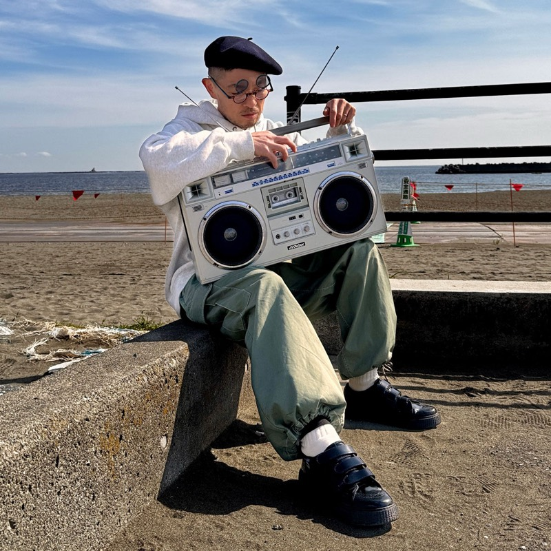
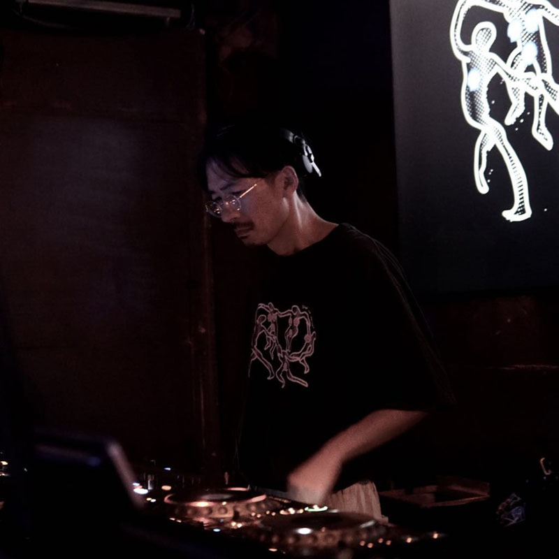
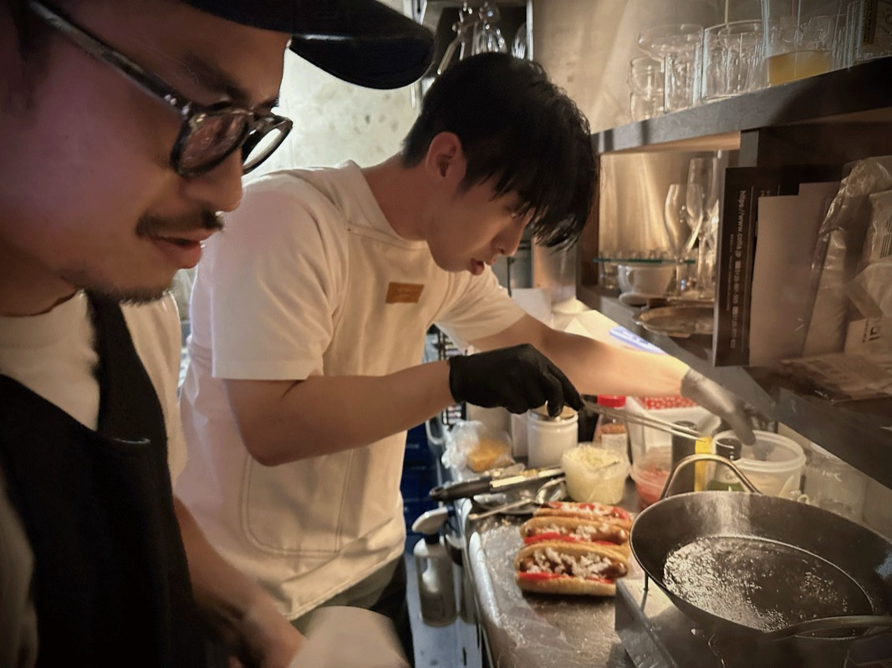

Group Exhibition
サマー カレイドスコープ
2026.8.8 SAT — 8.23 SUN
Cy Kamakura
Opening Reception
2026.8.8 SAT
14:00 — 24:00
No Cover. Just bring your thirst.



Nakayama Kei
横須賀出身。
家業の酒屋を継承する傍ら、酒と音楽を愛する
SAKE DJ。日本酒をテーマにした「SAKE SUNDAY」を主催し、2023
年には古民家日本酒バー「ヨネヤ」を開業。
「FUJI ROCK
FESTIVAL」「GREENROOM FESTIVAL」に出演。DJ ユニット「ULTIMATE
4TH」では 4
作品をリリースした。豊富な現場経験から生まれる、グルーヴ感あふれるクラブプレイをぜひ体感してほしい。


Abumi Masaya
1997 年、仙台のクラブにてキャリアをスタート。2004 年、拠点を東京に移し ageHa や WOMB にて海外アーティストらのサポート DJ を務める。現在も都内のクラブやバーを中心に不定期に活動を行う。本職はグラフィックデザイナー。

Chicago Style Hot Dog
毎度お馴染みのシカゴスタイルホットドッグ（こだわりのピクルスを大胆に使い、ケチャップを使わずにソーセージ・トマト・マスタードと合わせて食べるスタイル）に加え、ポテトやチリコンカーンなどのお酒のつまみとなるようなメニューをいくつか準備してお待ちしております。